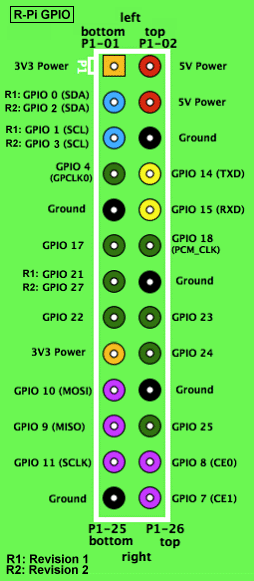

Change the current directory to another, allows you to navigate around the file system.
Lists the contents of a directory, commonly used on it's own, but can be used in the following format
ls -l To list the contents of a directory in a vertical list.
ls -a To list hidden files in a directory.
ls
Prints the name of your current/working directory.
Ifconfig is used to configure the kernel-resident network interfaces. It is used at boot time to set up interfaces as necessary. After that, it is usually only needed when debugging or when system tuning is needed. If no arguments are given, ifconfig displays the status of the currently active interfaces. If a single interface argument is given, it displays the status of the given interface only; if a single -a argument is given, it displays the status of all interfaces, even those that are down. Otherwise, it configures an interface.
iwconfig is similar to ifconfig, but is dedicated to the wireless interfaces. It is used to set the parameters of the network interface which are specific to the wireless operation (for example : the frequency). Iwconfig may also be used to display those parameters, and the wireless statistics (extracted from /proc/net/wireless).
ping uses the ICMP protocol's mandatory ECHO_REQUEST datagram to elicit an ICMP ECHO_RESPONSE from a host or gateway. ECHO_REQUEST datagrams (''pings'') have an IP and ICMP header, followed by a struct timeval and then an arbitrary number of ''pad'' bytes used to fill out the packet.
The GPIO (General Purpose Input Output, provides a method of sending and receiving data / electrical current, and is used mainly with electrical components.
